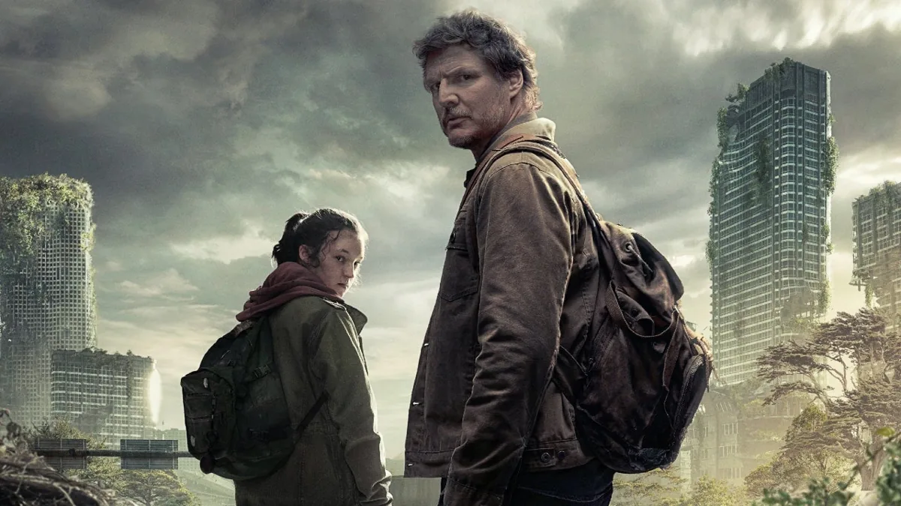

Actors
The Last of Us stars Pedro Pascal as Joel, a hardened survivor shaped by loss, and Bella Ramsey as Ellie, a sharp-witted teenage girl who may hold the key to humanity’s survival. Their performances anchor the series with emotional depth and realism. The supporting cast includes Anna Torv as Tess, Joel’s resourceful partner; Gabriel Luna as Tommy, Joel’s idealistic brother; Merle Dandridge as Marlene, leader of the Fireflies; and standout guest performances like Nick Offerman and Murray Bartlett as Bill and Frank, whose story is unique to the HBO adaptation. Together, the cast brings a grounded, human focus to the post-apocalyptic world.
